Audience: content authors and reviewers in AEM Universal Editor. Developers: see blocks/header/, blocks/footer/ and blocks/ask/, and the Figma measurements in blocks/*/…-measurements.txt.
About the screenshots: they show the header and footer as rendered in the local preview, at desktop (1440px), tablet (1024px) and mobile (402px) widths. The Universal Editor interface itself (Content Tree, Add menu, properties panel) can't be captured from this environment, so those steps are described in text. Numbered orange badges were added for this guide; they don't appear on the page. The "Home Page" text and the dark hero below the header belong to the test page, not to the header.
Status: tested in the local preview at desktop, tablet and mobile widths. Still to confirm in your AEM author environment: editing the nav and footer pages, and the Navigation and Footer page fields.
The header and footer aren't edited on each page. Each one is its own page, shared by every page of the site:
| Part | Edited on | Contains |
|---|---|---|
| Header | the nav page (/nav) |
Logos, menu links, the floating ask bar |
| Footer | the footer page (/footer) |
Closing heading, ask bar with suggested questions, copyright and links |
Change the nav or footer page once, publish it, and every page shows the change.
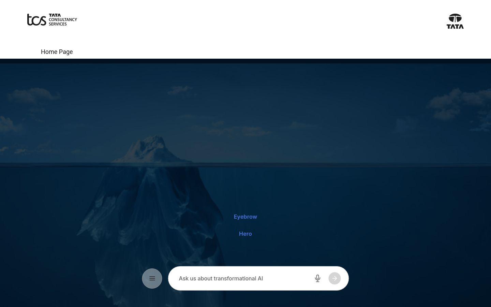
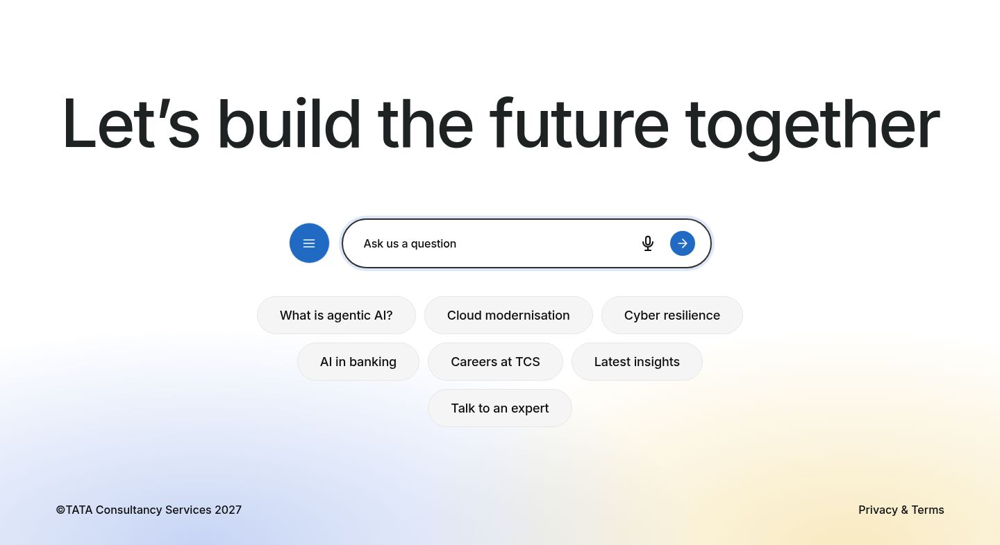
Open the nav page in Universal Editor. It holds up to three sections, in any order. The header recognises each one by what it contains:
| Section | Add these components | Becomes |
|---|---|---|
| Logos | Two Image components | Company logo (links to the home page) and group mark |
| Menu | One Text component with a bulleted list of links | The menu that opens from the menu button |
| Ask bar | One Ask block | The floating ask bar at the bottom of the screen |
This is the nav page as you see it while editing. The styling only appears in the real header:
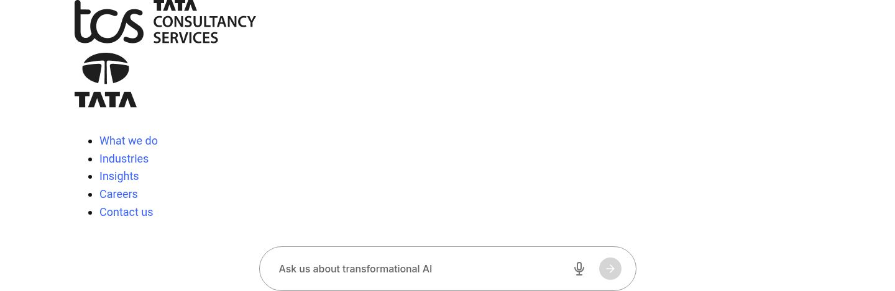
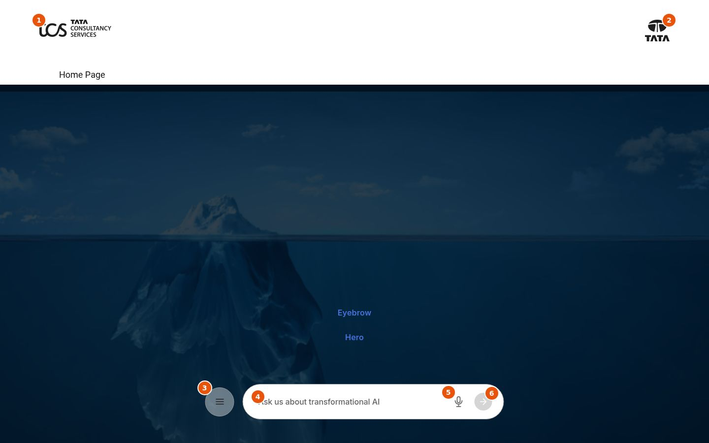
| # | Part | Where to change it |
|---|---|---|
| 1 | Company logo | First Image in the logos section. Its Alt Text names the home link, e.g. "Tata Consultancy Services" |
| 2 | Group mark | Second Image in the logos section. Alt Text, e.g. "Tata group" |
| 3 | Menu button | Added automatically. Opens the menu |
| 4 | Prompt text | Ask block → Prompt Text |
| 5 | Voice input | Added automatically, in browsers that support speech input |
| 6 | Send | Added automatically. Grey until a question is typed |
Add a Text component to the menu section and write a bulleted list where every item is a link:
When opened, the menu shows the links in one column on mobile and three columns on wider screens:
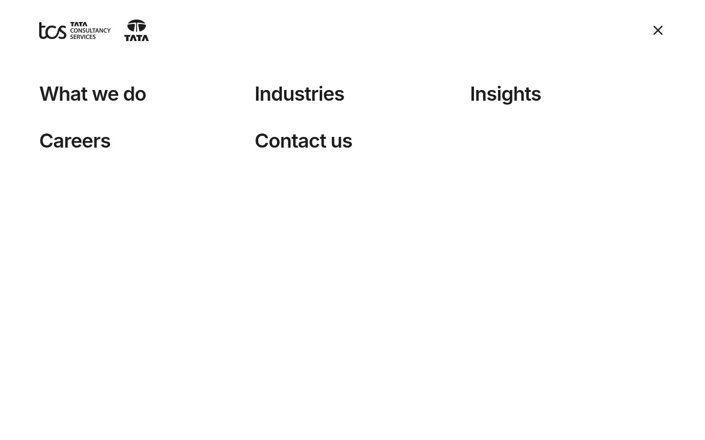
The Ask block is the question bar. The nav page uses it for the floating bar and the footer page for its large bar. It can also be added to any normal page section.
| Field | Notes |
|---|---|
| Prompt Text | Required, up to 60 characters. Shown in the empty input and read out by screen readers as the input's label |
| Answer Page | The page that answers questions. The question is added to its address as ?q=…. Leave it empty until an answer page exists; the question then reloads the current page |
| Suggested Questions | Optional bulleted list. Each item becomes a chip that asks that question when clicked |
When a visitor types, the send button turns blue:
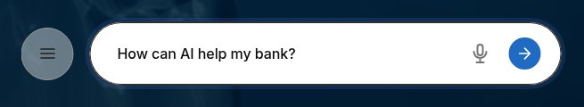
Open the footer page in Universal Editor. It has two sections:
| Section | Add these components |
|---|---|
| Top (call to action) | A Title (use Heading 2) and an Ask block with Suggested Questions |
| Bottom row | A Text component: the copyright line, then the links (e.g. "Privacy & Terms") |
The section holding the Ask block becomes the top area. Every other section becomes the bottom row.
This is the footer page as you see it while editing:
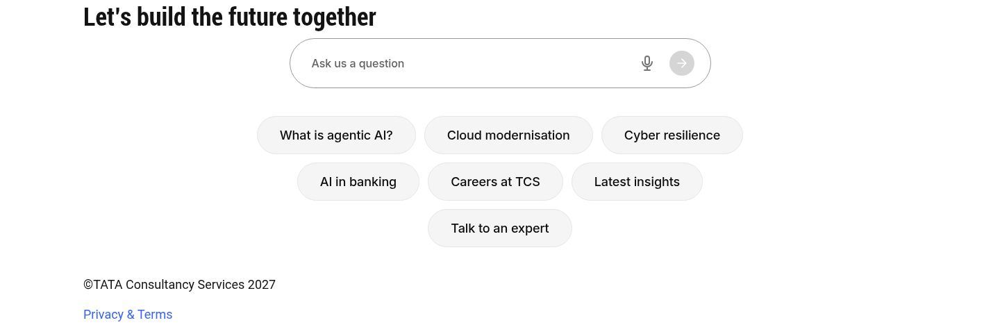
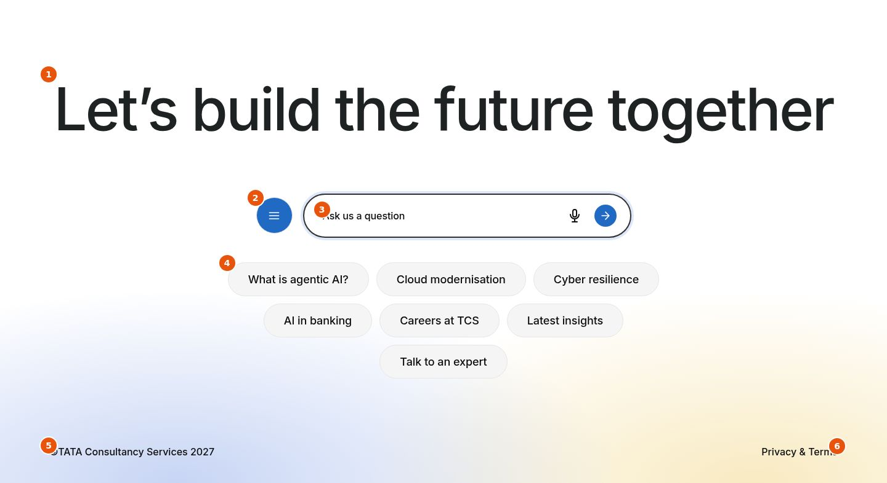
| # | Part | Where to change it |
|---|---|---|
| 1 | Heading | Title component, e.g. "Let's build the future together" |
| 2 | Menu button | Added automatically. Opens the same menu as the header |
| 3 | Prompt text | Ask block → Prompt Text, e.g. "Ask us a question" |
| 4 | Suggested questions | Ask block → Suggested Questions, one bullet per chip |
| 5 | Copyright | First paragraph of the bottom-row Text |
| 6 | Links | Links in the bottom-row Text. A link authored as a Button is still shown as a plain link |
Tips:
By default every page uses /nav and /footer. To give a page, or a microsite, its own header or footer:
Leave the fields empty to use the defaults.
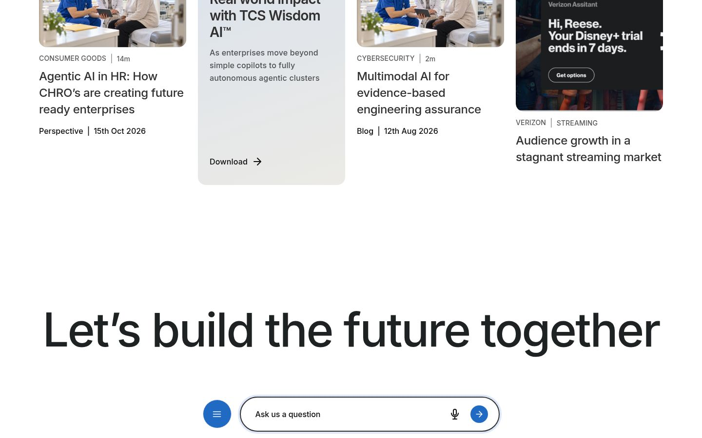
Nothing needs to be set for smaller screens. On tablet and mobile both logos sit on the left and a menu icon appears on the right.
Tablet: the floating bar keeps its menu button.
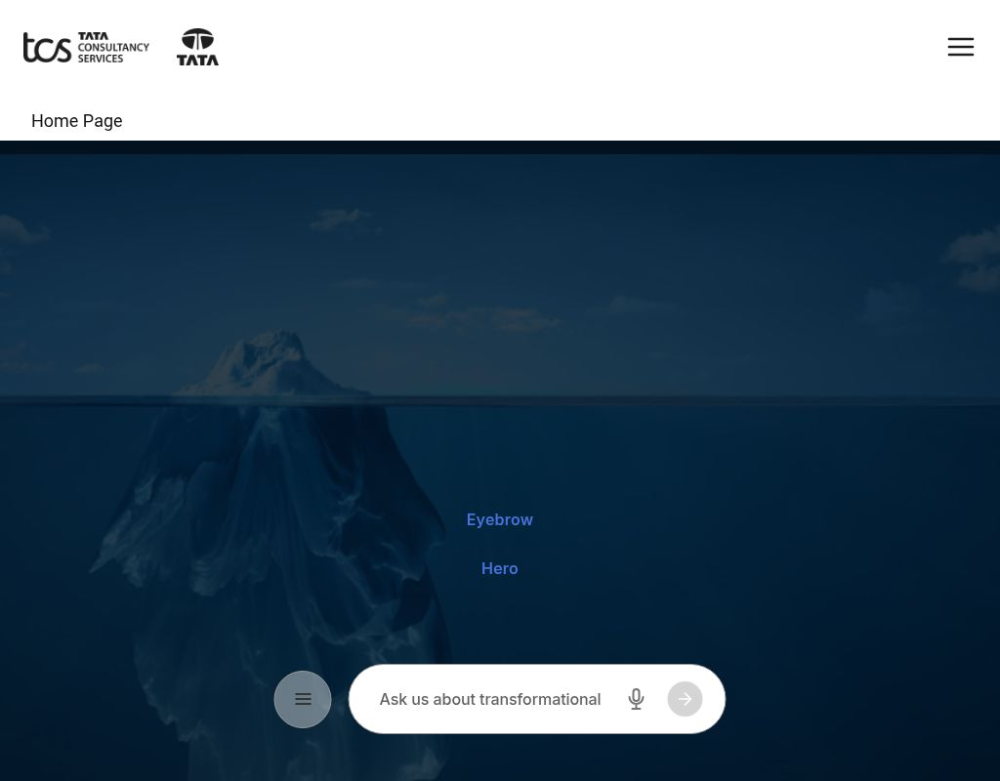
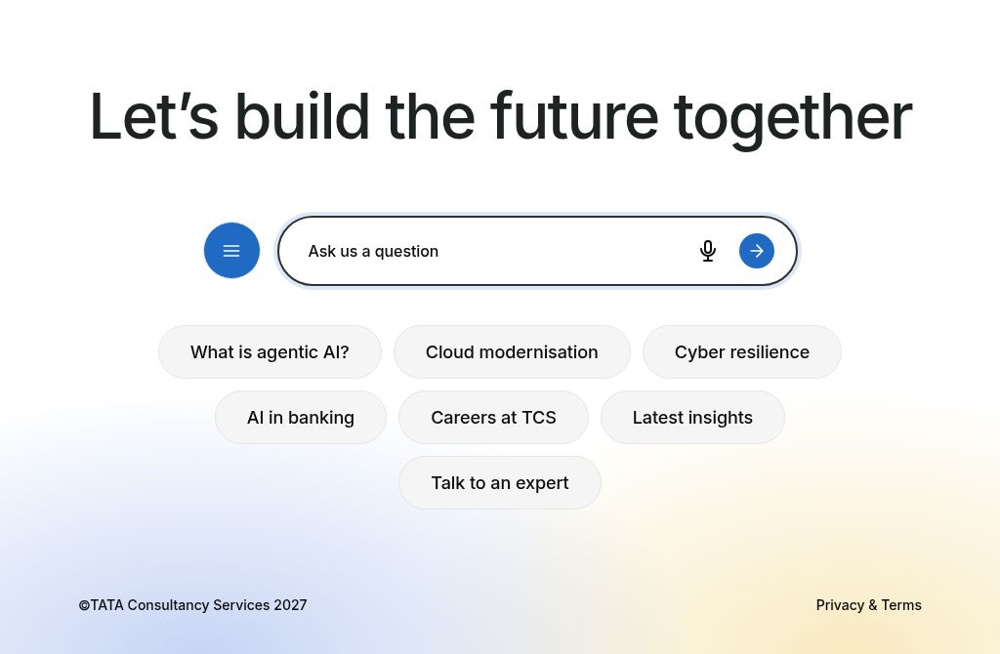
Mobile: the floating bar and the footer's ask bar drop their menu button, because the header's menu icon is always available.
| Header | Menu | Footer |
|---|---|---|
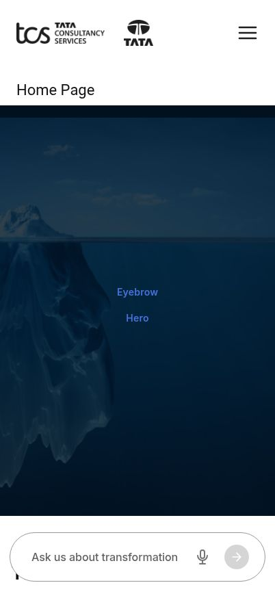 |
Every page picks up the change; there's no need to republish other pages.
Built in:
Authors should:
| Situation | What to do |
|---|---|
| The header shows no logo | Add an Image to the logos section of the nav page, then publish the nav page |
| There's no floating ask bar | Add an Ask block to the nav page. Without it, the menu icon shows in the header instead |
| A menu item isn't clickable | Make sure the list item is a link. Items that aren't links become group labels |
| The menu shows "Examples, Getting Started…" | The published nav page still has the old boilerplate content. Publish the new nav page |
| Questions go nowhere | Set Answer Page on the Ask block |
| No microphone button | It only appears in browsers that support speech input, e.g. not Firefox |
| A page shows a different header | Check the page's Properties → Navigation |
| "Privacy & Terms" looks like a button | It's shown as a plain link in the footer. If not, check it's in the bottom-row section, not the top one |
To view the sandbox locally: npx aem up --html-folder drafts --prefer-plain-html --port 3001, then open /drafts/header-footer (full header and footer) and /drafts/header-no-ask (header without an ask bar).